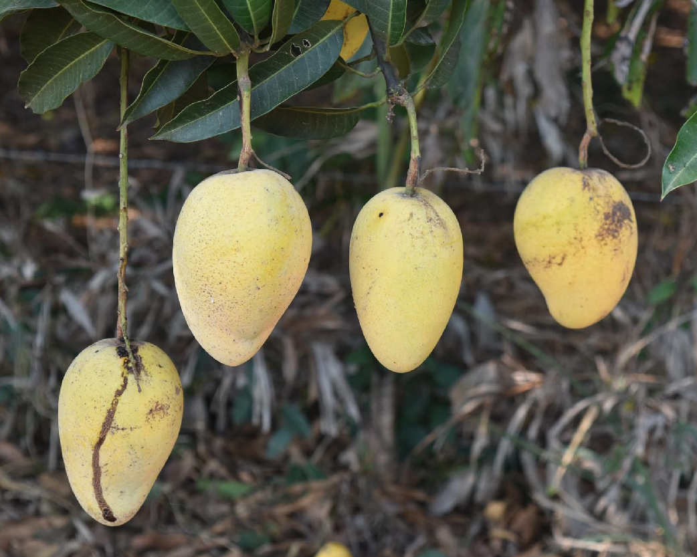

มะม่วงมันขายตึก

มะม่วงมันขายตึก หรือ “มะม่วงแขกขายตึก” อยู่ในวงศ์ ANACARDIACEAE เป็นมะม่วงสายพันธุ์โบราณจัดอยู่ในกลุ่มมะม่วงมันหรือมะม่วงกินดิบชนิดหนึ่ง ที่มาของชื่อเกิดจากรสชาติที่อร่อย จึงเปรียบเปรยว่าให้ขายตึกขายบ้านมาทานก็ยอมเลยทีเดียว จัดเป็นมะม่วงพันธุ์ไทยโบราณ ผลรูปกลมรีคล้ายผลมะม่วงมัน หรือมะม่วงแรด แต่จะมีขนาดใหญ่กว่า เมื่อโตเต็มที่น้ำหนักประมาณ 2 ผลต่อหนึ่งกิโลกรัม เนื้อผลเยอะ ไม่มีเสี้ยน เม็ดลีบ ผลดิบสีเขียว รสชาติหวานมันปนเปรี้ยวนิด ๆ กรอบเหมือนมะม่วงมัน นิยมปลูกเพื่อรับประทานผลดิบ